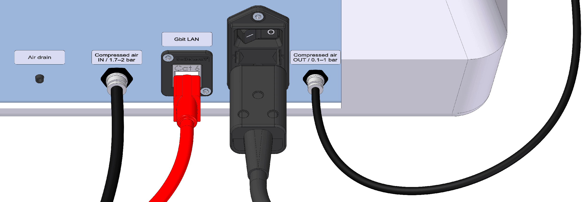
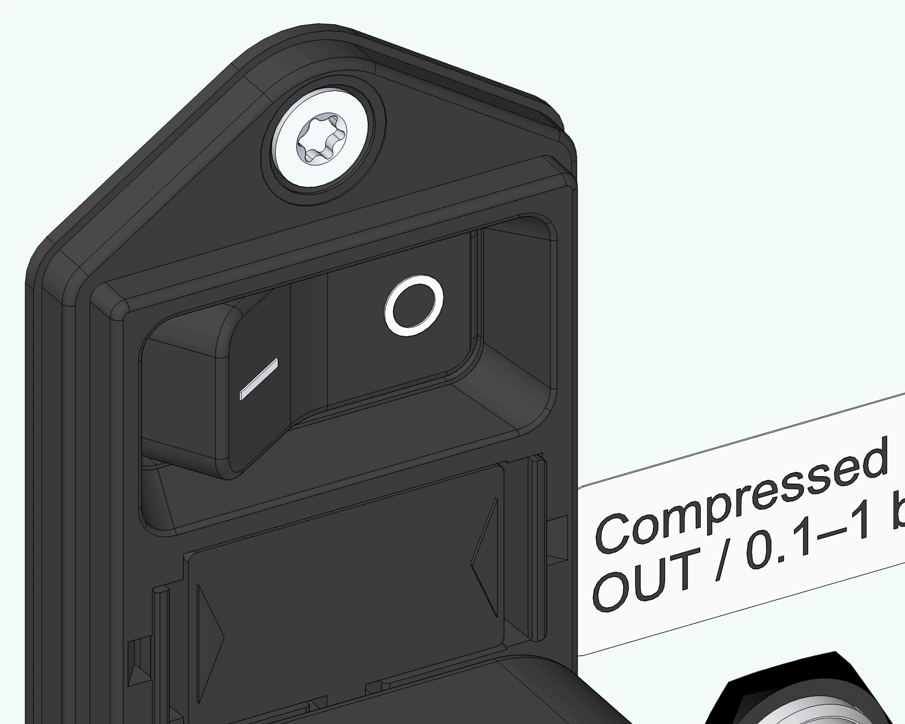
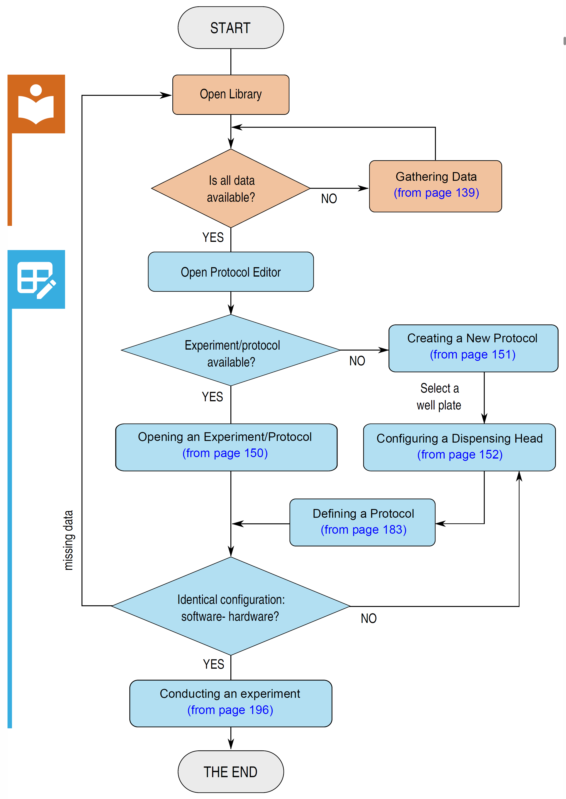
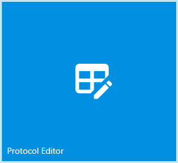
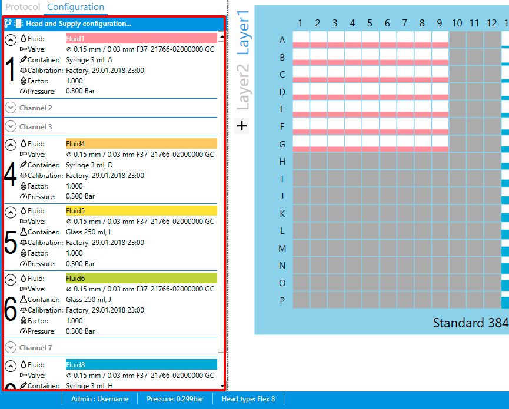

Operation¶
This section describes how to properly use CERTUS CONTROL software, as well as all necessary measures to ensure successful dispensing with CERTUS FLEX.
Safety Instructions for Operators¶
Warning: Risk of electrical shock injury

► Maintenance and repair works may only be performed by qualified maintenance and service personnel.
Caution: Danger from skin irritation and intoxication due to contact with substances harmful to human health (e.g., cleaning agents)
► The end user has to provide the workstation with, for example, additional ventilation, gloves, goggles, protective clothing, protective headgear, etc. to be able to handle substances harmful to human health.
► Observe warnings of the respective safety datasheets.
► Wear protective equipment suitable for substances used.
Caution: Risk of crushing due to axial movement

► Maintenance and repair works may only be performed by qualified maintenance and service personnel.
► Hands should be kept away during axial movement.
Actions Prior to Use¶
Prior to operation, you should read section Start-Up and carry out the following steps:
-
All necessary interfaces (cables and tubes) are properly connected.

-
The waste tray is installed. (For the discharge function, an appropriate catch device should be provided.)
-
The dispensing head is installed on a Y axis, and the screw is tightened.
-
All the micro valves to be used are screwed onto the dispensing head. (The serial number and type of each micro valve and the channel number are recorded.)
-
The bottles are refilled with fluid and the bottle cap is tightened hand-tight.
-
The bottle/syringe kits are properly installed, and the inlet adapter is connected to the relevant micro valve at the dispensing head and tightened using the hand screw.
-
All the compressed air and fluid tubes are connected.
-
All the open outlets at the bottle cap and the compressed air manifold are provided with a plug.
-
CERTUS CONTROL is installed on a PC and connected with CERTUS FLEX.
Power-Up¶
Caution: Risk of crushing due to axial movement

► Hands should be kept away during axial movement.
-
Prior to power-up, make sure that there are no tools or other foreign objects near the axes.
-
Press the main switch at the back of the base unit.
-
The status LED lights up green, and the axes move until they reach stop (reference travel).

-
-
Switch on the PC and start up CERTUS CONTROL.
- Log on to CERTUS CONTROL as a user.
Note
For more operational possibilities, you have to log on as a user with administrator rights. For more information,Users.
Overview - Experiment¶
The flow chart provides an overview when setting up an experiment and shows the neces- sary steps until its completion.

Gathering Data¶
Before you can start an experiment, you have to gather all data (fluid, micro valve and well plate) in the library. For more information, see Library.
Fluid¶
Fluids to be used for an experiment have first to be added to the library. For more information, see Fluid.
{kind=link}
Adding a fluid¶
By clicking add new, you can enter data for a new fluid. Clicking apply! completes the input, and the new fluid appears in the list. For more information, see Fluid
{kind=link}
Note
Avoid white when defining fluid color as it would not differ from the white background in Protocol Editor.
Editing a fluid¶
By clicking edit, you can edit data of any existing fluid. For more information, see Fluid.
{kind=link}
Deleting a fluid¶
Right-clicking an existing fluid can delete it with the command Delete fluid.
{kind=link}
Adding a temporary fluid¶
If a fluid not listed in the library was used to configure an opened experiment, a temporary fluid appears. It is marked with a red symbol.
Right-clicking the temporary fluid and Make fluid permanent permanently adds the fluid to the library.
{kind=link}
Micro valves¶
The micro valves installed on the dispensing head have first to be added to the library. For more information, see Valve.
{kind=link}
Adding a new micro valve¶
{kind=link}
- Click on add new... and type in the serial number of the micro valve.
- The entry date will be generated in the Entry Date text box.
- The valve type will be displayed in the Valve Type text box.
- Type in a comment (optional) and click apply to add the valve into the library.
Note
Only micro valves with an 8 digits serial number will be detected automatically. For 4-6 digits, the valve type has to be selected in a separate window
Deleting a micro valve¶
Right-click on an existing micro valve and delete it with the command Delete Valve.
{kind=link}
Adding a temporary micro valve¶
If a micro valve not listed in the library was used to configure an opened experiment, a temporary micro valve appears. It is marked with a red symbol.
Right-click the temporary micro valve and Make Valve permanent permanently adds the micro valve to the library.
{kind=link}
Well Plates¶
A well plate to be used for an experiment has first to be added to the library. For more information, see Well Plate.
{kind=link}
Note
Depending on the configuration of the well plate holder, well plate heights ranging from 1 to 49 mm can be used.
Adding a Well Plate¶
CERTUS CONTROL is supplied with three popular well plate formats. You can neither edit nor delete them.
- Standard 96, 384 and 1536 well plates
-
Select a standard well plate from the list to copy the data to the new well plate.
Note
If the new well plate you add is non-standard, you can skip this step.
-
Click add new to define data for a new well plate.
{kind=link}
To change well plate height, edit the value under „Z:". For more information, see Well Plate--definitions.
Note: Risk of collision due to the wrong wall plate height
If a well plate higher than specified is used, the dispensing head may collide with the well plate during axial movement.
- Make sure that the entered well plate height is correct.
- During dispensing, use no well plate other than specified in the software.
Standard 96 Well Plate¶
| Well Volume | Layout Col. | Layout Row. | Pitch X | Pitch Y | Offset X | Offset Y | Z |
|---|---|---|---|---|---|---|---|
| 200 µl | 12 | 8 | 9.00 | 9.00 | 14.38 | 11.24 | 14.40 |
Standard 384 Well Plate¶
| Well Volume | Layout Col. | Layout Row. | Pitch X | Pitch Y | Offset X | Offset Y | Z |
|---|---|---|---|---|---|---|---|
| 110 µl | 24 | 16 | 4.50 | 4.50 | 12.13 | 8.99 | 14.40 |
Standard 1536 Well Plate¶
| Well Volume | Layout Col. | Layout Row. | Pitch X | Pitch Y | Offset X | Offset Y | Z |
|---|---|---|---|---|---|---|---|
| 10 µl | 48 | 32 | 2.25 | 2.25 | 11.01 | 7.87 | 10.40 |
Adding an Evaporation Curtain¶
In addition, you can define an evaporation curtain for each well plate using the Edit Evaporation Curtain window.
An evaporation curtain is used to reduce evaporation differences of border wells due to external factors (such as ambient temperature).
For the explanation of the user interface, see Evaporation Curtain.
Note
By default, no evaporation curtain is defined when creating a new wellplate. Itis shown as NONE.
-
Click add new or edit to enable the input area.
-
Click the button in the input area to the right of Evaporation:
✔ The Edit Evaporation Curtain window opens.
{kind=link}
-
Click add new to define a new dispensing position:
{kind=link}
-
Redefine the position by editing the offset values.
-
Enter the maximum possible filling volume.
Evaporation curtain -- sample use 1¶
In this example, the evaporation curtain runs along the outer moat of the well plate. It is usually subdivided, so multiple dispensing points have to be defined.
{kind=link}
-
Click add new to define dispensing point 1 by editing the offset values. Example: X Offset=6 mm, Y Offset=23 mm
{kind=link}
-
Define the filling volume and select the Vertical pattern function. Multiple dispensations can thus be carried out in the vertical direction.
{kind=link}
-
Define the number of dispensations in the vertical direction and the interval between dis- pensations.
Example: Count total=2, Repeat Distance=40 mm
✔ Dispensing point 2 is defined.
-
Use apply to confirm dispensing point 1 and 2.
✔ Dispensing points 1 and 2 are added to the list.
{kind=link}
-
Use add new to add dispensing points 3 and 4 and adapt X Offset. Example: X Offset=122 mm
{kind=link}
-
Use apply to confirm dispensing points 3 and 4.
✔ All dispensing point 1-4 are added to the list.
-
Click OK to save the settings and close the window.
✔ The evaporation curtain is finally defined.
For refilling in Protocol, see Refilling the Evaporation Curtain.
Evaporation curtain -- sample use 2¶
All inter wells of the well plate are refilled here. Each well is thus shrouded in fluid, and all wells show the same evaporation behavior.
{kind=link}
-
Click add new and define dispensing point 1 by editing the offset values.
Example: X Offset=63.88 mm, Y Offset=42.74 mm
-
Define the filling volume and select the Single pattern function.
-
Use apply to confirm dispensing point 1 and use OK to save the settings.
✔ Dispensing point 1 is added to the list.
For more information, see Refilling the Evaporation Curtain.
Calibrations¶
For information regarding the user interface, see Calibration.
{kind=link}
Importing a calibration¶
Click Import under the menu bar and select the desired function.
For a more detailed description, see Calibration.
Opening an Experiment/Protocol¶
If an experiment or protocol already exists, you can open it as follows:
-
Opens Protocol Editor.

✔ Clicking the Experiment tab opens the backstage view.
For more information, see Experiment Menu
-
Click Open.
✔ The directory window opens.
-
Select the experiment file (.expt) or switch the file type to protocol file (.protocol) to open a protocol.
{kind=link}
{kind=link}
{kind=link}
Note
By default, the *.expt file type is used. This can be changed under Default saving format as explained in Protocol Editor to *.protocol.
Creating a New Protocol¶
-
Open Protocol Editor.
✔ Clicking the Experiment tab opens the backstage view.
For more information, see Experiment Menu.
-
Click New Protocol.
✔ The Select Well Plate for New Protocol window opens.
-
Select the desired well plate.
✔ The selected well plate is visually shown in Protocol Editor.
{kind=link}
Note
To create a new protocol, you can also click the symbol in the quick menu.The Select Well Plate for New Protocol window opens.
{kind=link}
Configuring a Dispensing Head¶
The left column under Configuration should reflect the dispensing head installed on the base unit.
Each channel has to match the configurations of the dispensing heads (container, fluid, micro valve, and pressure) here.
For more information, see Configuration.
In addition, a calibration should be assigned to each channel. For more information, see Calibration.
Note
The settings made in Configuration are automatically saved and also exist after CERTUS CONTROL is restarted. In this context, the configuration is regarded as active. During use,it is regularly adjusted and modified.

{kind=link}
Note
The following sections explain step by step how to use an empty template for a Flex8 dispensing head.
Using a Dispensing Head Template¶
-
Click Head and Supply configuration...
✔ The Template Manager window opens.
{kind=link}
-
Under the TEMPLATE column, select the Flex 8, emplty template and apply by double-clicking it. Alternatively right-click > apply.
{kind=link}
| Text Only | |
|---|---|
1 2 3 4 5 | |
Note
By right-clicking => apply,the configuration of the supply (Supply) and the dispensing head (Head) can be applied separately. If both are marked, the supply as well as the dispensing head configuration is taken over.
{kind=link}
Note
A red cross sign to the left of the template in forms that the installed dispensing head is in compatible with the template and cannot be used.
Copy the Configuration Template¶
Right-click on template => Save as... opens the following window: Template Manager
{kind=link}
-
Select the part to be copied. (Supply and / or Head)
-
Define/enter the name of the template.
-
Default = template (creation date [YY / MM / DD] _time [hh / mm /ss])
✔ Select ok to add the template to the list.
-
Saving an Active Configuration¶
The active dispensing head configuration can be saved in Template Manager.
{kind=link}
-
Name the active template under Template Manager > Save active configuration.
-
Check to define the contents of the configuration.
- Head: Saves configurations along with the dispensing head configuration.
- Supply: Saves configurations along with the supply configuration.
-
Click save to save the configuration.
Defining a Supply Kit¶
Supply kits are registered and managed in Configuration Manager. They are supposed to help avoid wrong configurations. Thus, only one output of the relevant kit is always assigned to a channel at a later stage.
In addition to the kit type proper and a selection of various bottle and syringe types, the supply kit contains the fluid and pressure used.
The kit ID makes subsequent identification easier. For more information, see Configuration Manager.
-
To open Configuration Manager, double-click the channel or click > the Channels symbol.
✔ Configuration Manager opens.
-
Click ADD SUPPLY KIT
✔ The Kit Supply Selector window opens.
-
Select the ID, the type of kit, and the fluid, and set the pressure.
-
Confirm with ok.
✔ The supply kit is added to the list.
-
Repeat the same steps to add all supply kits needed for the installed dispensing head.
✔ All supply kits are shown in the list.
✔ Proceed to configure individual channels.
{kind=link}
{kind=link}
{kind=link}
Note
Data for the supply kit can be edited directlyin the list. You have to create a new entry if you would like to change kit type.
Configuring Channels¶
In the Channel Configuration area, a supply kit, a micro valve, and a calibration are defined for each channel.
In the En column, you can enable or disable individual channels. By using a factor in the Factor column, you can edit the dispensing volume.
Factor column, you can edit the dispensing volume.
For more information, see Configuration Manager.
{kind=link}
Enabling/Disabling a Channel¶
If not all channels are used with the installed dispensing head, you can disable (=no check) or enable (=check) the channel you want.
Note
A channel can also be disabled if a fluid is assigned to multiple channels, but you would like to use only a specific channel for dispensing.
-
In the En column, check all channels to be used.
✔ You can select the Supply Kit column.
✔ Proceed to define a (B) supply kit.
-
In Protocol Editor, right-click the channel to enable/disable it with the Disable/ Enable command.
{kind=link}
{kind=link}
Defining a Supply Kit¶
In the next column, a supply kit is defined for the selected channel as explained in Defining a Supply Kit.
-
Click to the right of the channel number.
✔ The list of the supply kit added above is expanded.
-
Select the desired the supply kit.
✔ You can select the Valve column.
✔ Proceed to define a (C) micro valve.
{kind=link}
Selecting a micro valve¶
Here, you can select the micro valve installed on the dispensing head.
-
In the Valve column, open the selection list.
✔ The list of micro valves added to the library is expanded.
-
Select the micro valve installed on the dispensing head under this channel number.
✔ Proceed to assign a (D) calibration.
{kind=link}
Note
If it is difficult to select a micro valve due to a large number of added micro valves, you can use the ? search function to filter out the desired micro valve by serial number or type.
Assigning a Calibration¶
If a calibration already exists for the desired channel, it can be assigned to the channel.
-
Click the row in the Calibration column.
✔ Open Calibration Manager for the selected channel number. For more information, see Calibration Manager.
Calibration Manager sets filtering in accordance with the selected values.
-
Select the listed Calibration and confirm with ok.
✔ The channel configuration was successfully completed.
✔ Optionally, you can change the factor.
{kind=link}
Note
If no calibration is listed, it has to be repeated. For this purpose, see Calibration.
Alternatively, a calibration with a similar configuration can be selected by editing the set filters.
Adapting the Factor Value (Option)¶
{kind=link}
By editing the factor value (the default value is 1.0), you can change a calibration upward or downward.
Factor = Vexpected ÷ Vmeasured => Thus, +1% corresponds to a factor value of 1.010.
It is used, for instance, to take into account temporary factors such as temperature, pressure deviation, etc.
Avoid changing the factor
The possibility to edit the factor value is only a transitional solution to avoid a calibration. To make dispensing accurate, a clean calibration is indispensable. For more information, see Calibration.
-
Repeat steps A to D until all needed channels are configured.
-
Click ok to confirm the configuration of all channels.
✔ The completion of the dispensing head is complete.
Configuration transfer to another dispensing head type¶
After installing a new type of dispensing head, the configuration can be adapted to the new head type.
Procedure:
-
Change the dispensing head on the CERTUS FLEX.
-
CERTUS CONTROL detects the change of the dispensing head.
-
Select confirm to confirm the change of the dispensing head.
-
Readout if the configuration matches the installed dispensing head:
-
Readout if the configuration is incompatible with the installed dispensing head:
-
-
Right-click the blue area Incompatible Head config... and select Transfer configuration.
-
Confirm the message for the configuration transfer.
{kind=link}
{kind=link}
{kind=link}
{kind=link}
{kind=link}
Note
With a configuration transfer, the channels are transferred according to the channel numbers.If a channel number is not available in the new configuration, it will be lost! Any empty media kits that are eventually created are not deleted and still can be used.
Maintenance¶
Individual maintenance functions to prepare and clean channels/micro valves are described here. You can find them in Protocol Editor under Maintenance. For more information, see Maintenance.
Warning: Risk of fluid spillage

Fluid may spill into the waste tray during the execution of maintenance functions (Flush, Prime, and Purge). This may cause malfunctions (if fluid spills into the housing) and have health consequences.
► Manually remove fluid before it spills out.
► Use a waste tray with discharge function.
Caution: Risk of crushing due to axial movement

If the Move Dispensing Head down option is checked, the dispensing head moves down. Which creates a risk of crushing during axial movement.
► Hands should be kept away during axial movement.
Note: Avoid idle dispensing

Dispensing without fluid could reduce the life of the micro valve.
► Always dispense with fluid.
► Make sure that there is enough fluid in the container.
► Before proceeding with dispensing, check that the micro valve is supplied with fluid.
Preparation¶
Before starting an experiment, you should make sure that the fluid tubes and micro valves are completely refilled with fluid and there are no air bubbles in the fluid channel.
To achieve this, the Flush and Prime functions are used for one or more channels.
Note
If there is no pressure or no calibration was performed, you cannot use the Flush or Prime function.
(The keys are grayed out)
Flush¶
{kind=link}
During flushing, the micro valve remains open until the set time is over. (the default value is 120 s).
Note
The duration of the flushing function can be edited under Settings. See Flush
Enable compressed air, under Air.
{kind=link}
Note
- Optional: Set the air pressure mode toAuto or Manual.
- Auto:The air pressure defined for the supply kit is used for the maintenance commands. Refer to Defining a Supply Kit.
- Manual:The manually set air pressure is used, the configured air pressure is ignored. The dispensed volumes of the maintenance commands issued may differ
- Select a channel to be flushed.
- (Option) Disable Move Dispensing Head down if the dispensing head should not move down.
- Click the Click to Flush key under Preparation. ✔ Flushing starts and automatically stops after 120 s.
Note
Clicking Click to STOP stops the flushing function.
Prime¶
{kind=link}
During priming, the micro valve is opened until the defined volume is dispensed.
- Select the channel for priming.
- Enter a priming volume in the Prime volume column.
- (Option) Disable Move Dispensing Head down if the dispensing head should not move down.
-
Click the Prime key under Preparation.
✔ Priming starts and dispenses the set volume.
Cleaning¶
If a problem occurs during dispensing or the micro valve is not used for a longer period of time, it is recommended cleaning the micro valve. A micro valve can be cleaned by using the Purge and Clean Cycle functions.
Before using Purge and Clean Cycle, read Cleaning the micro valve.
Note
The Purge and Clean Cycle functions can be used for multiple channels simultaneously.
Purge¶
{kind=link}
Briefly open and close the micro valve until the quantity set under Purge volume is reached. The opening time depends on the type of valve here.
- Select a channel to be purged.
- Enter a purging volume in the Purge volume column.
- (Option) Disable Move Dispensing Head down if the dispensing head should not move down.
-
Click the Cleaning key under Purge.
✔ The purging function starts.
✔ The micro valve opens/closes until the set volume is dispensed.
Clean cycle¶
{kind=link}
Clean Cycle is a combination of the Prime and Purge functions. The cleaning cycle is repeated as many times as set under Cycles.
- Select a channel for the cleaning cycle.
- Enter a priming volume in the Prime volume column.
- Enter a priming volume in the Purge volume column.
- (Option) Move Dispensing Head down if the dispensing head should not move down.
- (Option) Define the number of cleaning cycle repetitions under Cleaning next to Cycles (the default value is 5).
-
Click the Cleaning key under Clean Cycle.
✔ The cleaning cycle (Prime and Purge) starts.
Calibration¶
CERTUS FLEX dispenses in a combination of multiple factors.
When you use a factor, the dispensing volume can differ even if the valve opening time remains the same.
Note
Example: Compressed air pushes fluid out of the container. If the valve opening time remains the same, dispensing with higher pressure yields a larger volume.
The dispensing volume is influenced by the following factors:
- Compressed air
- Fluid density
- Fluid viscosity
- Position of the supply kit
- Micro valve
- Use of a feed tube or syringe
- Tube diameter and length where a feed tube is used
Note
If you use an original supply kit, you can be sure that you always use the right tube length/diameter.
For a calibration, these factors have to be correctly predefined in the software. See Configuring a Dispensing Head.
Note
A calibration always affects the entire channel setup, but not only a micro valve.
To make dispensing accurate, each combination needs to be configured. See Overview -- Calibration.
Calibration -- Optimization¶
To make the calibration as accurate as possible, the following steps have to be taken prior to calibration:
- Before calibration, clean the calibration jar.
- Protect the laboratory balance against the following disturbances: electrostatic/magnetic forces, air flow, and ambient variations.
- Avoid direct sunlight.
- To prevent evaporation of dispensed fluid, the calibration cap should always be left on.
- Short distance between CERTUS FLEX and the laboratory balance. This helps reduce evaporation of dispensed fluid.
Overview -- Calibration¶
The flow diagram shows the sequence and necessary steps of the calibration.
{kind=link}
Preparing a Calibration¶
Before you can start a calibration, the following preparations have to be made:
✔ CERTUS CONTROL is opened and connected to the base unit.
✔ The base unit is provided with necessary compressed air.
✔ The calibration channel was flushed with the Flush function.
For more information, see Preparation.
Note
The fluid channel connected to the micro valve must not develop any air bubbles. A constant fluid jet has to be ejected from the micro valve when Flush is executed.
✔ A calibration kit (type 2) is available. It consists of an adapter plate, a calibration cap, and a calibration jar.
✔ The well plate holder, the adapter plate, the calibration jar, and the calibration cap have to be clean and dry to avoid undesired weight losses.
✔ A laboratory balance with a reading accuracy of 0.1 mg is available.
Note: Do not use an inaccurate laboratory balance
The more accurate the dispensed quantity can be measured during calibration, the more accurate the result is
► Use a laboratory balance with a reading value of at least 0.1 mg (0.0001 g).
► Protect the laboratory balance against external factors.
► Put the adapter plate on the well plate holder. Orientation is irrelevant here.
Adjust the Calibration name¶
The displayed name of the calibration in the protocol editor can be adjusted with defined tokens and text.
-
Open the settings window see Default Values.
-
Define the naming for the calibration by using tokens and any text.
Note
When typing the token, make sure to add the curly brackets „{ „ and „}“.
All usable tokens are listed underneath the input field.
If left blank, the following tokens will be used: {Type}, {CreationTime}
For example:
{kind=link}
Opening CERTUS Calibrator¶
- Protocol Editor > Configuration Right-click the desired channel.
-
Select the Calibrate command from the context menu.
✔ The CERTUS Calibrator window opens.
For more information on the window, see CERTUS Calibrator.
{kind=link}
Loading Values¶
At first when creating a new calibration, the values of an existing calibration can be loaded. Subsequently the desired calibration values can be determined or deactivated.
Note
It is recommended that within desired dispensing range at least the standard values are calibrated. In the lower valve region in particular, the ratio of opening time - dispensing volume is not linear and a certain number of calibration points essential.
As a reference, within the curve (CERTUS Calibrator) the gray Standard calibration curve is displayed.
-
Click Load Values in the CERTUS Calibrator window.
✔ The CALIBRATION SELECTOR window opens. For more information, see the Calibration Selector.
-
Select a calibration template with a configuration that is as identical as possible and load it by clicking load values.
✔ The loaded values can be seen in the Volume and Flowrate column.
-
dispense at the desired calibration point to start dispensing.
For this purpose, see Determining Calibration Points.
{kind=link}
Determining Calibration Points¶
-
Put an empty calibration jar with calibration cap on the laboratory balance and reset it.
-
Insert the calibration jar with calibration cap into the hole of the adapter plate.
-
Click dispense in the CERTUS Calibrator window.
-
The well plate holder travels under the dispensing head and the micro valve dispenses with the set opening time (Open Time) and number of shots.
-
As soon as the well plate holder comes back to the starting position, pull the calibration jar out of the adapter plate and determine the weight difference using the laboratory balance.
{kind=link}
{kind=link}
{kind=link}
{kind=link}
{kind=link}
Note: Weight deviation due to evaporation
After dispensing into the calibration jar, there may be some weight loss due to fluid evaporation.
Therefore:
► As soon as the well plate holder with calibration jar comes back to the starting position, determine the weight using the laboratory balance to reduce volume losses due to evaporation.
► Determine the weight of the calibration jar at equal intervals. From the completion of dispensing to weight determination using the laboratory balance.
-
Enter the measured weight in the Weight column. Watch out for the measure unit!
-
Reset the weight of the filled calibration jar before proceeding with the next calibration points.
-
Take the same steps for the remaining calibration points.
{kind=link}
{kind=link}
Note
A calibration can only be completed if the weight determination of all active standard calibration points has been carried out. Standard calibration points can also be deactivated. Particularly in the lower valve region, a certain resolution of the points is recommended due to its non-linear behavior.
The gray standard calibration curve (CERTUS Calibrator) can be used as an aid.
Adding customized Calibration Points¶
-
Click Add Value in the CERTUS Calibrator window.
✔ The Custom Calibration by Volume window opens.
-
Define the target volume and number of shots for calibration purposes.
{kind=link}
{kind=link}
Note
- If the target volume is low (<10 μl), a higher number of shots is recommended. Each shot stands for the target volume.
- For the measurement to be reliable, the total dispensed volume, which is the target volume multiplied by the number of shots, has to be heavy enough on the laboratory balance.
-
Put an empty calibration jar with calibration cap on the laboratory balance and reset it.
-
Insert the calibration jar with calibration cap into the hole of the adapter plate.
-
Click dispense in the Custom Calibration by Volume window.
✔ The well plate holder travels under the dispensing head and the micro valve dispenses with the set opening time (Open Time) and number of shots (Shots).
-
As soon as the well plate holder comes back to the starting position, pull the calibration jar out of the adapter plate and determine the weight difference using the laboratory bal- ance.
{kind=link}
{kind=link}
{kind=link}
{kind=link}
Note: Weight deviation due to evaporation
After dispensing into the calibration jar, there may be some weight loss due to fluid evaporation. Therefore:
► As soon as the well plate holder with calibration jar comes back to the starting position, determine the weight using the laboratory balance to reduce volume losses due to evaporation.
► Determine the weight of the calibration jar at equal intervals. From the completion of dispensing to weight determination using the laboratory balance.
-
Enter the measured weight in the Weight column. Watch out for the measure unit!
✔ As soon as the measured weight is entered, the volume (Volume) and the deviation (Deviation) are automatically calculated, and a new row is added for further test dispensations.
✔ A deviation of ± 5% is flagged with a thumbs up sign in the Selection column.
Note
Once a dispensation is flagged with a thumbs up sign, you can take it for calibration. However, to obtain a better deviation, it is advisable to conduct some more dispensations.
-
Reset the weight of the filled calibration jar before proceeding with the next dispensation.
-
Once multiple dispensations are performed, select for calibration the value with the low- est deviation by clicking Take Best or the desired entry by clicking the thumbs up sign.
{kind=link}
{kind=link}
{kind=link}
Completing Metadata¶
Before you save the calibration, complete missing information under Metadata.
Note
Designations for the laboratory balance (Balance) and fluid temperature (fluid temp) can be predefined under Settings. See Settings.
{kind=link}
Verification using the Graph¶
To make sure that individual calibration points are within the correct area, the dispensing flow rate and the dispensed volume can be visually verified under Flowrate-Graph and Volume-Graph, respectively.
Viewing tools
► Holding down the left mouse button = show details
► Holding down the right mouse button = move the image
► Scrolling the mouse wheel = zoom in or out
► Double-clicking the mouse wheel = adjust the view
► Pulling the mouse wheel = define the zoom area
Flowrate-Graph¶
{kind=link}
Volume-Graph¶
{kind=link}
Note
If the graph increases steadily, the calibration areas are correctly applied. Otherwise, the calibration point in question has to be dispensed once again.
Verifying a Calibration¶
CERTUS CONTROL enables to verify the calibration used. This option can also be used to regularly check dispensing accuracy.
- Right-click the calibrated channel under Protocol Editor > Configuration
Note
Calibrated channels are flagged with a thumbs up sign. This means that the calibration is just right for this setup.
-
Click the Verify command in the context menu.
✔ The CERTUS Verificator window opens.
-
Put a calibration jar with calibration cap on the laboratory balance and reset it.
-
Insert the calibration jar with calibration cap into the hole of the adapter plate.
-
In the CERTUS Verificator window, click dispense at the volume area to be verified.
✔ The well plate holder travels under the dispensing head and the micro valve dispenses with the set volume(Volume) and number of shots (Shots).
-
As soon as the well plate holder comes back to the starting position, pull the calibration jar out of the adapter plate and determine the weight difference using the laboratory balance.
{kind=link}
{kind=link}
{kind=link}
{kind=link}
{kind=link}
Weight deviation due to evaporation
After dispensing into the calibration jar, there may be some weight loss due to fluid evaporation. Therefore:
► As soon as the well plate holder with calibration jar comes back to the starting position, determinetheweightusing the laboratory balanceto reduce volume lossesdue to evaporation.
► Determine the weight of the calibration jar at equal intervals. From the completion of dispensing to weight determination using the laboratory balance.
-
Enter the measured weight in the Weight column. Watch out for the measure unit!
-
Reset the weight of the filled calibration jar before proceeding with the next dispensation.
-
Take the same steps for the remaining volumes.
{kind=link}
{kind=link}
Verifying a User-Defined Volume¶
-
Click Add Value in the CERTUS Verificator window.
How to open CERTUS Verificator, see Verifying a Calibration.
✔ The Custom Point for Verification window opens.
-
Enter the desired volume and number of shots.
{kind=link}
{kind=link}
Note
For the number of shots, you can use a recommended value (Shots recommended). The predefined number of shots also takes into account the entered minimum weight of the balance, see Calibration.
-
Once you confirm with ok, the value is temporarily added to the list. The temporary volume entry is flagged with an icon.
-
Put a calibration jar with calibration cap on the laboratory balance and reset it.
-
Insert the calibration jar with calibration cap into the hole of the adapter plate.
-
For a temporary volume entry, click dispense.
✔ The well plate holder travels under the dispensing head and the micro valve dispenses with the set volume (Volume) and number of shots (Shots).
-
As soon as the well plate holder comes back to the starting position, pull the calibration jar out of the adapter plate and determine the weight difference using the laboratory bal- ance.
{kind=link}
{kind=link}
{kind=link}
Weight deviation due to evaporation
After dispensing into the calibration jar, there may be some weight loss due to fluid evaporation.
Therefore:
► As soon as the well plate holder with calibration jar comes back to the starting position, determine the weight using the laboratory balance to reduce volume losses due to evaporation.
► Determine the weight of the calibration jar at equal intervals. From the completion of dispensing to weight determination using the laboratory balance.
-
Enter the measured weight in the Weight column. Watch out for the measure unit!
-
Reset the weight of the filled calibration jar before proceeding with the next dispensation.
-
Take the same steps for the remaining volumes.
{kind=link}
{kind=link}
Defining a Protocol¶
Creating a New Protocol¶
A new protocol can be created as follows:
- Ctrl + N
-
Click the symbol in the Quick access bar.
-
Click New Protocol in the Experiment Menu. For more information, see Experiment Menu.
✔ A Select Well Plate for new Protocol window opens.
-
Click the well plate to be used.
✔ A new protocol was successfully created.
✔ The well plate is visualized.
{kind=link}
{kind=link}
Refilling the Evaporation Curtain¶
An evaporation curtain was set for the well plate, it can be defined in Protocol with the required filling volume (%) and fluid.
For more information, see Adding an Evaporation Curtain.
Note
The volume to be refilled is shown as a percentage as areas can be defined with various filling volumes.
-
Right-click in the area under Well Plate and click Set Evaporation.
✔ The Set Evaporation Dispense window opens.
-
Define fluid to refill the evaporation curtain and enter the filling volume in percent. (The default value is 10%)
-
Define if the evaporation curtain should be refilled before (Before any layer) or after (After all layers) dispensing of all layers.
-
Confirm with OK to close the evaporation curtain.
{kind=link}
{kind=link}
{kind=link}
{kind=link}
Note
To disable the evaporation curtain, you have to set fluid to Disable Evaporation.
Regions¶
Read first section Protocol.
Creating a region¶
-
Place the cursor in a corner of the region to be created.
-
Holding down the left mouse button, define a region by diagonally dragging across it.
✔ Visualize the region by means of a selection rectangle (green).
-
Release the left mouse button.
✔ The region is outlined in yellow.
For more selections, see Region – highlighting functions.
-
Right-click in the area and click New Region.
✔ The Region Editor window opens.
{kind=link}
{kind=link}
{kind=link}
Region -- Highlighting Functions¶
Defining a whole well plate as a region¶
-
If no region is defined in a layer, all wells of the well plate can be defined as a region by clicking the black triangle (top left).
{kind=link}
Defining independent regions¶
-
By holding down the Ctrl key, you can select various wells, which can subsequently be treated as a combined region.
{kind=link}
Highlighting a whole row or column¶
-
Clicking a number highlights a whole column (or multiple columns if you hold down the Ctrl key)
-
Clicking a letter highlights a whole row (or multiple rows if you hold down the Ctrl key)
{kind=link}
Note
If wells are already defined in a column or row as a region, you cannot use this function.
Defining a dispensing function (Region Editor)¶
-
(Option) Rename the region.
-
Define fluid and a dispensing function for a region.
For more information, see Dispensing Functions.
✔ The dispensing function along with the fluid are listed in the right column.
-
Define synchronous dispensing under Synchronous Dispense. For more information, see Synchronous dispense.
-
Under Axis Movement, define the axial movement of dispensing. For more information see Axial movement.
{kind=link}
{kind=link}
{kind=link}
{kind=link}
Confusion: dispensing and functional movements
Axial movement should not be confused with the route of a dispensing function. Axial movement determines how the dispensing head moves and is not affected by the route of the dispensing function.
-
Under Sequence Replicate, replicates within a region can be defined. For more information see Sequence Replicate.
{kind=link}
Adding a dispensing quantity as an Excel table¶
The Discrete dispensing function can be individually used to define the dispensing volume for each well.
In addition, it is possible to enter values copied from an Excel table.
-
In Region Editor, select the Discrete dispensing function.
-
In the right column, click the EDIT LIST key.
✔ The Discrete Volumes Editor window opens.
-
Open the Excel file and select and copy the desired values.
-
In the Discrete Volumes Editor window, click IMPORT CLIPBOARD.
✔ The Clipboard Import window opens.
-
Define the top left input position and the unit of Excel values.
-
Click IMPORT to confirm the Excel values to be added.
✔ The Excel values are added to Discrete Volumes Editor.
{kind=link}
{kind=link}
{kind=link}
{kind=link}
{kind=link}
Note
The entered values can be subsequently edited.
-
Click ok to confirm the entered values.
✔ The Excel values were successfully added to the Discrete dispensing function.
Layer¶
Read first section Protocol.
Note
Once a new experiment is opened, the first layer (Layer1) is automatically created. Right-click Layers to add further layers.
Moving a layer¶
The sequence of individual layers determines what will be processed first. Fluid will be dispensed first to the top layer and finally to the bottom one.
Individual layers can be moved as follows:
-
Holding down the left mouse button, move the layer to the desired place.
✔ A Move to Tooltip appears at the place to be moved.
✔ A gray bar is displayed across the whole column width.
{kind=link}
Disabling and enabling a layer¶
If you would like to leave out a layer during an experiment, it can be disabled.
{kind=link}
Import CSV file¶
Dosage volumes, which are saved as a CSV file can be imported into the protocol. In this case, the volumes are being imported as a cohesive region.
Note
The CSV file cannot be imported into the protocol if there is a conflict with the occupied position in the existing Layer.
Import CSV-volumes into a new layer¶
- In the protocol editor, click on Experiment to open the experiment menu.
-
Under Import click on Import CSV File and choose the desired CSV file.
✔ CSV Import Wizard will open with the content of the CSV file.
-
Click on next > to proceed.
Optional: the starting line and the encoding can be chosen.
-
Choose the corresponding separator, decimal symbol and volume unit.
-
Click on finish to import the data into the protocol.
{kind=link}
{kind=link}
{kind=link}
{kind=link}
Import CSV-volumes into an existing layer¶
-
In the protocol editor, right click on an existing layer and choose Import CSV data.
-
Choose and open the desired CSV file.
✔ CSV Import Wizard will open with the content of the CSV file.
-
Click on next to proceed.
✔ Optional: the starting line and the encoding can be chosen.
-
Choose the corresponding separator, decimal symbol and volume unit.
-
Click on finish to import the data into the protocol.
{kind=link}
{kind=link}
{kind=link}
{kind=link}
{kind=link}
Edit CSV volumes¶
The CSV volumes must be edited in the CSV file and imported again in order to change the volumes.
-
Double-click the desired region to open the region editor. (Or right click on the region and select Edit Region..)
-
Click on Import CSV... and choose the CSV file.
Note
The well positions in the CSV file will be processed according to the travel path specified in the AXIS MOVEMENT. By selecting the Enforce strict CSV well order moving path, the processing sequence will be in accordance with the CSV file.
CSV format¶
If dispensing volumes are imported as a CSV file, the formatting should be as follows:
Position;DNA;NaCl;BSA
# Comment section
A1;0.1;10;5
A2;0.05;5;5
A3;0.2;20;5
A4;0.5;50;5
Examples for CSV files can be found in:
%ProgramData%\\Gyger\\CERTUS CONTROL\\doc
Note
Import of older V1 CSV files is still supported.
Position;Vol_Ch01;Vol_Ch02;Vol_Ch03
# Comment section
A1;1;6;5
A2;2;5;5
A3;3;20;5
A4;4;50;5
Conducting an experiment¶
The following items have to be completed before an experiment can be conducted:
-
All following items have to be completed before an experiment can be conducted. See Actions Prior to Use and Preparation
-
The base unit is ready to use. See Power-Up
-
The well plate defined in the protocol is in the well plate holder.
-
The data defined in Configuration is compliant with the hardware.
-
Compressed air is enabled in Protocol Editor.
-
Click the start symbol. under Execution (Ready).
✔ The Protocol Validator window opens.
{kind=link}
{kind=link}
{kind=link}
{kind=link}
{kind=link}
Note
For more information on error messages, see Certus Control Protocol Validator.
-
Click continue to conduct the experiment. Click abort to interrupt the experiment.
✔ The well plate holder positions itself under the dispensing head.
✔ The micro valve dispenses in accordance with the values set in the protocol.
Note
If you disable the Always show this dialog option, Protocol Validator is shown in case of error message only.
Problems during execution
If a problem such as collision with the well plate, well spillage, wrong dispensing position, etc. is detected while conducting an experiment, the experiment has to be interrupted right away to prevent damage or other dangers.
► Clicking the pause symbol pauses the experiment; continuation is possible. Functions under Maintenance can be used during a pause.
► Clicking the stop symbol stops the experiment; no continuation is possible.
{kind=link}
Interval Purge Loop (IPL)¶
{kind=link}
If CERTUS FLEX is leftwith fluid inside for a longer time (up to 72 hours),you can use the Interval Purge Loop (IPL) function to ensure cyclical micro valve flushing. For more information, see Interval Purge Loop (IPL).
At a set time interval, IPL dispenses a defined priming and purging volume into the waste tray. fluid can thus be prevented from setting or caulking inside fluid hose or micro valve.
Note
The purging/priming time is taken into account at a set time interval. Therefore, the time interval for the next purging should not be less than 30 s.
Risk of fluid spillage

Fluid may spill into the waste tray when the Interval Purge Loop function is used. This may cause malfunctions (if fluid spills into the housing) and have health consequences.
► Manually remove fluid before it spills out.
► Use a waste tray with discharge function.
Risk of crushing due to axial movement

If Move Dispensing Head down is checked, the dispensing head moves down. There is a risk of crushing during axial movement.
► Hands should be kept away during axial movement.
► Place a check at Keep Dispensing Head down.
Avoid idle dispensing

Dispensing without fluid could reduce the life of the micro valve.
► Always dispense with fluid.
► Make sure that there is enough fluid in the container.
► Before proceeding with dispensing, check that the micro valve is supplied with fluid.
Procedure:
-
In Protocol Editor, click the IPL symbol.
✔ The Interval Purge Loop flyout is opened from the right side.
-
Under Definition, select the channel to be used with the IPL function.
-
Adjust the volumes for the priming and purging functions. The default value = 200 µl / 50 µl is recommended.
Note
The value entered in the box can be copied to all channels by subsequently clicking the relevant symbol.
-
Define the number of cycles for the purging/priming function. (The default value is 1.)
-
Define the behavior of the dispensing head.
If Move Dispensing Head down is checked, the dispensing head moves down to the waste tray for each purging/priming. If Keep Dispensing Head down is also checked, the dispensing head moves down only at the start of IPL, where it remains until IPL is complete.
It is recommended checking both options.
-
Define the time interval for purging/priming.
Note
To save on fluid, you should select the possibly longest time interval. Time can be set in the
hh:mm:ssformat or directly in seconds. -
Define the duration of the Interval Purge Loop.
Note
Time can be set in the
hh:mm:ssformat or directly in seconds. -
Enable compressed air.
Note
By clicking the two symbols below, parameters set in IPL can be saved as a *.ipurge file or opened.
-
Clicking the start symbol launches IPL.
Problems during execution
If a problem is detected during IPL execution, IPL has to be immediately interrupted to prevent damage and other dangers.
► Clicking the pause symbol pauses the IPL function (continuation is possible)
► Clicking the stop symbol stops the IPL function (no continuation is possible)
{kind=link}
{kind=link}
{kind=link}
{kind=link}
{kind=link}
{kind=link}
{kind=link}
{kind=link}